SwaggerSwagger简介：1、背景2、SwaggerSpring boot集成Swagger1、环境搭建2、配置 Swagger3、Swagger配置扫描接口4、配置是否启动5、Swagger在生成环境使用，在发布的时候不适用6、配置API文档分组6.1、分组：.groupName("wangyunjie")6.2、如何配置多个分组7、实体类配置8、自带测试测试一：get测试二：post测试三：报错总结
学习目标：
前后端分离：Vue + SpringBoot
后端时代：前端只用管理静态页面，html=》后端。模板引擎jsp=》后端是主力。
前后端分离时代：
后端：后端控制层，服务层，数据访问层【后端团队】
前端：前端控制层，视图层【前端团队】
前后端如何交互？=》API
前后端相对独立，松耦合
前后端甚至可以部署在不同的服务器上
产生一个问题：前后端集成联调，前后端人员无法做到立即协调，需要尽快解决；
解决方案：
首先制定一个schema【计划的提纲】，实时更新最新API，降低集成的风险；
早先年：制定word文档
前后端分离：
在项目中使用Swagger需要springfox；
新建一个spring boot = web项目
导入相关依赖（新版本可能访问地址变化，回退旧版本）
x1<!-- https://mvnrepository.com/artifact/io.springfox/springfox-swagger2 -->2<dependency>3 <groupId>io.springfox</groupId>4 <artifactId>springfox-swagger2</artifactId>5 <version>3.0.0</version>6</dependency>78<!-- https://mvnrepository.com/artifact/io.springfox/springfox-swagger-ui -->9<dependency>10 <groupId>io.springfox</groupId>11 <artifactId>springfox-swagger-ui</artifactId>12 <version>3.0.0</version>13</dependency>旧版本：
xxxxxxxxxx141<!-- https://mvnrepository.com/artifact/io.springfox/springfox-swagger2 -->2<dependency>3 <groupId>io.springfox</groupId>4 <artifactId>springfox-swagger2</artifactId>5 <version>2.9.2</version>6</dependency>789<!-- https://mvnrepository.com/artifact/io.springfox/springfox-swagger-ui -->10<dependency>11 <groupId>io.springfox</groupId>12 <artifactId>springfox-swagger-ui</artifactId>13 <version>2.9.2</version>14</dependency>编写一个Hello工程
xxxxxxxxxx141package com.stefan.swagger.controller;23import org.springframework.web.bind.annotation.RequestMapping;4import org.springframework.web.bind.annotation.RestController;56public class HelloController {89 (value = "/hello")10 public String hello(){1112 return "hello";13 }14}配置Swagger，编写config
xxxxxxxxxx91package com.stefan.swagger.config;23import org.springframework.context.annotation.Configuration;4import springfox.documentation.swagger2.annotations.EnableSwagger2;56 // 开启Swagger28public class SwaggerConfig {9}测试运行（http://127.0.0.1:8080/swagger-ui.html）新版地址（http://127.0.0.1:8080/swagger-ui/index.html）
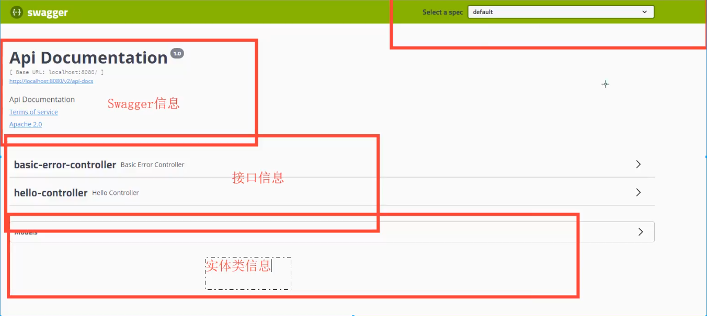
Swagger的bean实例Docket：在Swagger配置类中添加组件
xxxxxxxxxx211//配置Swagger的Docket实例2public Docket docket(){4 return new Docket(DocumentationType.SWAGGER_2).apiInfo(apiInfo());5}67// 配置swagger信息 = apiInfo8private ApiInfo apiInfo(){9 //作者信息10 Contact contact = new Contact("Klaus", "http://127.0.0.1:8080/files/test.png", "1424245538@qq.com");1112 return new ApiInfo(13 "Stefan的SwaggerAPI文档",14 "人生若只如初见",15 "v1.0",16 "http://127.0.0.1:8080/files/test.png",17 contact,18 "Apache 2.0",19 "http://www.apache.org/licenses/LICENSE-2.0",20 new ArrayList());21}测试：
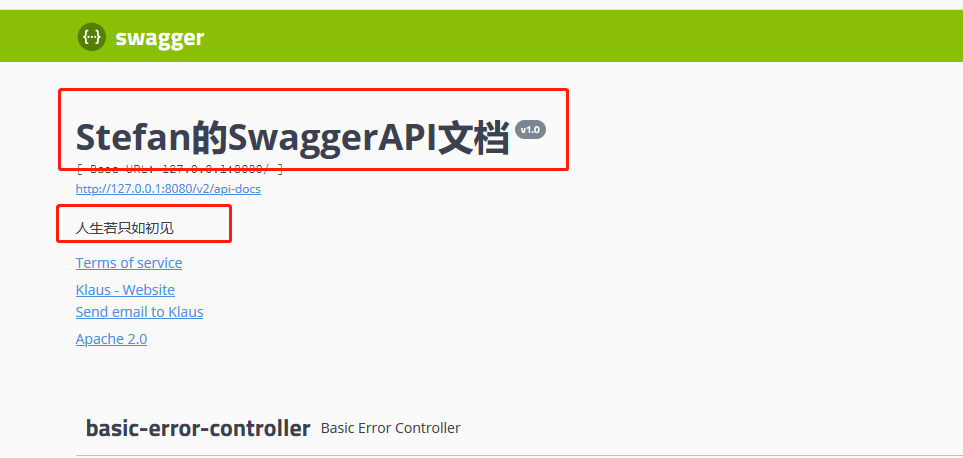
xxxxxxxxxx1//配置Swagger的Docket实例2public Docket docket(){4 return new Docket(DocumentationType.SWAGGER_2)5 .apiInfo(apiInfo())6 .select()7 // RequestHandlerSelectors配置要扫描接口的方式8 // basePackage指定要扫描的包9 // any()：扫描全部10 // none()：不扫描11 // withClassAnnotation：扫描类上的注解12 // withMethodAnnotation：扫描方法上的注解13 // withClassAnnotation14 .apis(RequestHandlerSelectors.basePackage("com.stefan.swagger"))15 // paths() 过滤什么路径16 // .paths(PathSelectors.ant("/stefan/**"))17 .build();18}xxxxxxxxxx1// enable是否启动Swagger，如果为false，则Swagger不能在浏览器中访问2public Docket docket(){4 return new Docket(DocumentationType.SWAGGER_2)5 .apiInfo(apiInfo())6 .enable(false)7 .select()8 .apis(RequestHandlerSelectors.basePackage("com.stefan.swagger"))9 .build();10}判断是否是生成环境 flag = fase，添加environment获取环境
xxxxxxxxxx31#application.properties2server.port=80803#spring.profiles.active=devxxxxxxxxxx161// enable是否启动Swagger，如果为false，则Swagger不能在浏览器中访问2public Docket docket(Environment environment){4 // 设置要显示的Swagger环境5 Profiles profiles = Profiles.of("dev","test");6 // 获取项目的环境：通过environment.acceptsProfiles判断是否处于自己设定的环境中7 boolean flag = environment.acceptsProfiles(profiles);8 System.out.println(flag);910 return new Docket(DocumentationType.SWAGGER_2)11 .apiInfo(apiInfo())12 .enable(flag)13 .select()14 .apis(RequestHandlerSelectors.basePackage("com.stefan.swagger"))15 .build();16}注入enable()，如果enable中为false则显示下面的结果
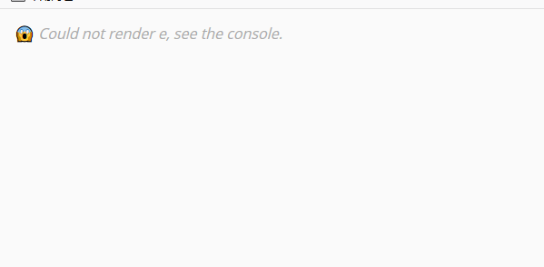
.groupName("wangyunjie")xxxxxxxxxx91public Docket docket(Environment environment){34 return new Docket(DocumentationType.SWAGGER_2)5 .apiInfo(apiInfo())6 .groupName("wangyunjie")7 .apis(RequestHandlerSelectors.basePackage("com.stefan.swagger"))8 .build();9}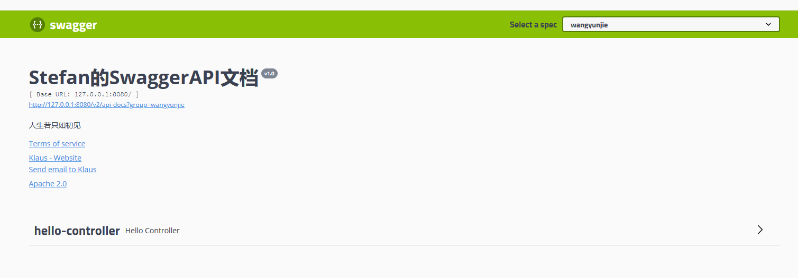
使用多个Docket实例
141public Docket docket2(){3 return new Docket(DocumentationType.SWAGGER_2).groupName("hhhhhh");4}56public Docket docket3(){8 return new Docket(DocumentationType.SWAGGER_2).groupName("ttttt");9}1011public Docket docket4(){13 return new Docket(DocumentationType.SWAGGER_2).groupName("jjjjj");14}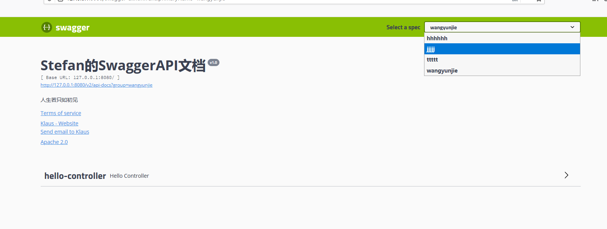
编写实体类，无set，get方法，参数扫描不到
xxxxxxxxxx241package com.stefan.swagger.pojo;23public class User {45 private String username;67 private String password;89 public String getUsername() {10 return username;11 }1213 public void setUsername(String username) {14 this.username = username;15 }1617 public String getPassword() {18 return password;19 }2021 public void setPassword(String password) {22 this.password = password;23 }24}编写接口，返回值中需要有实体类
xxxxxxxxxx51// 只要我们的接口中，返回值中存在实体类，就会被扫描到Swagger中2@PostMapping(value = "/user")3public User user(){4return new User();5}
测试
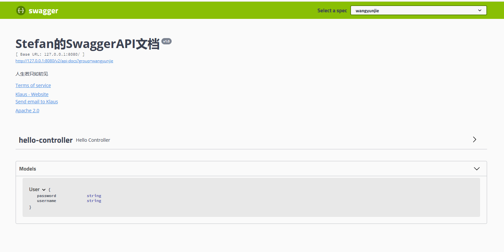
@ApiModel、Api：实体类上面添加注解，文档给实体类加注释
x
1//@Api(注释)或者2("用户实体类")3public class User {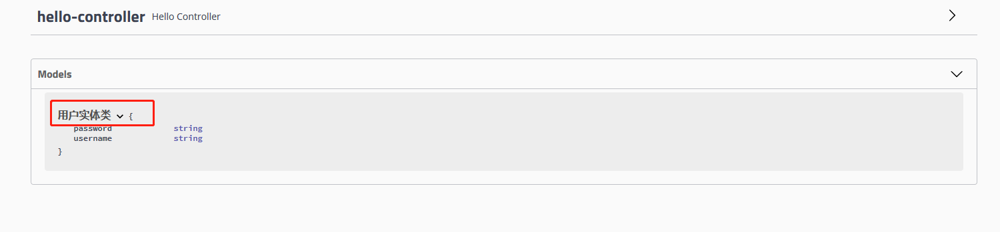
@ApiModelProperty：属性上面添加注解，给属性加注释
x
1("用户名")2private String username;34("密码")5private String password;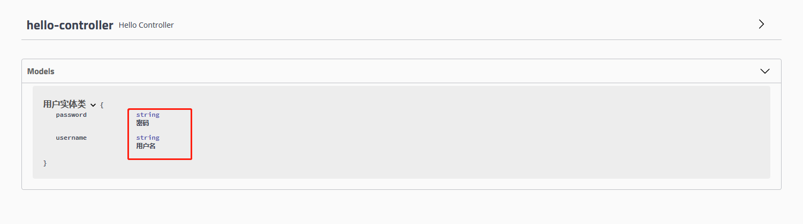
@ApiOperation：接口上加注解，接口注释
x
1// ApiOperation不是放在类上的，是放在方法上面的2("hello方法")3("/hello2")4public String hello2(String str){5 return "hello" + str;6}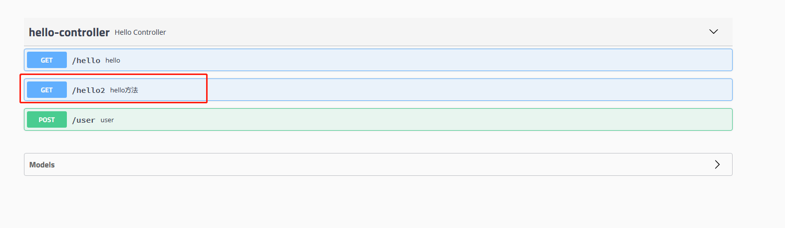
@ApiParam：加在参数前，参数注释
x
1// ApiOperation不是放在类上的，是放在方法上面的2("hello方法")3("/hello2")4public String hello2(("用户名") String str){5 return "hello" + str;6}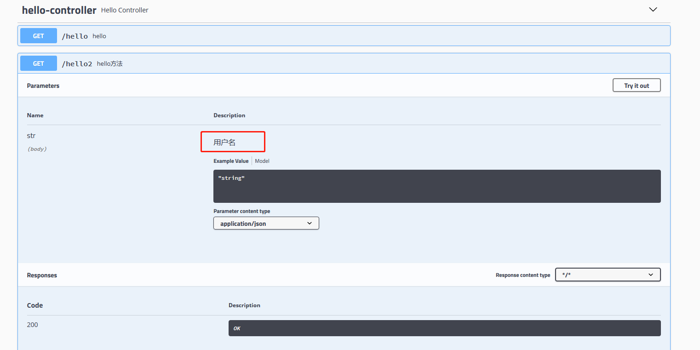
点击try it out进行测试
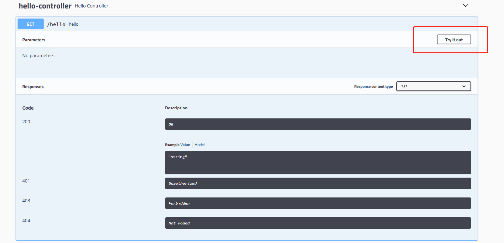
点击execute执行
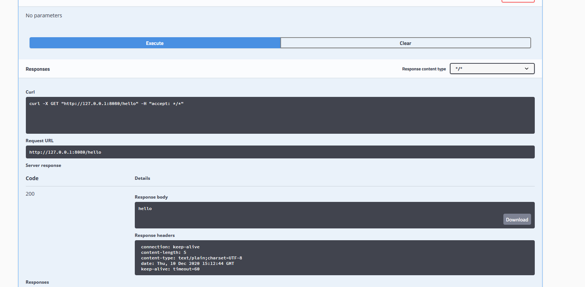
方法：
xxxxxxxxxx51("post测试")2("/testPro")3public User testPro(("一个用户") User user){4 return user;5}测试
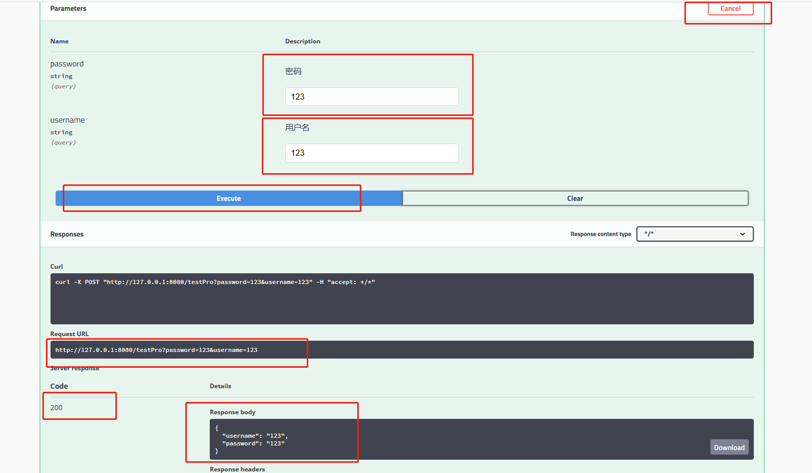
方法：
61("post测试")2("/testPro")3public User testPro(("一个用户") User user){4 int i = 5/0;5 return user;6}测试：
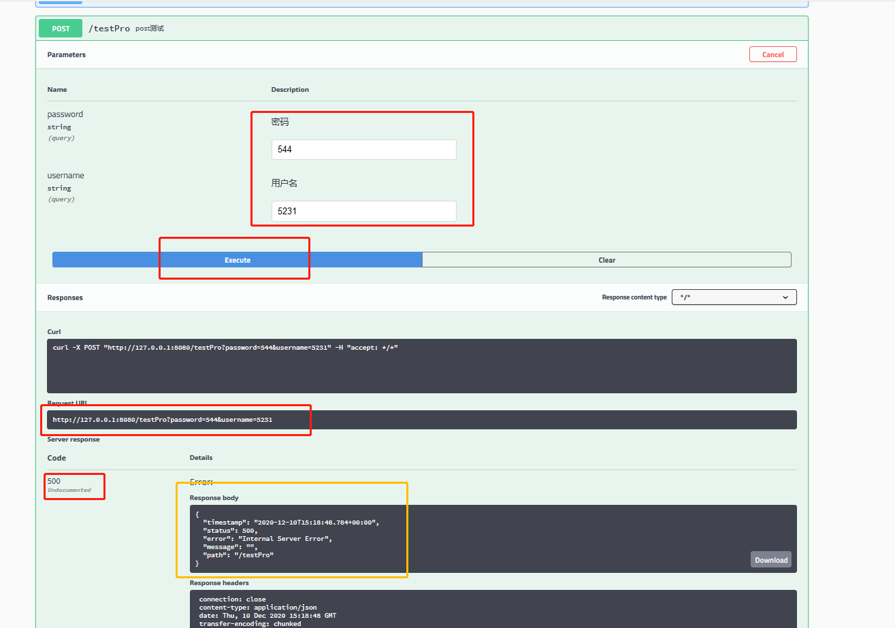